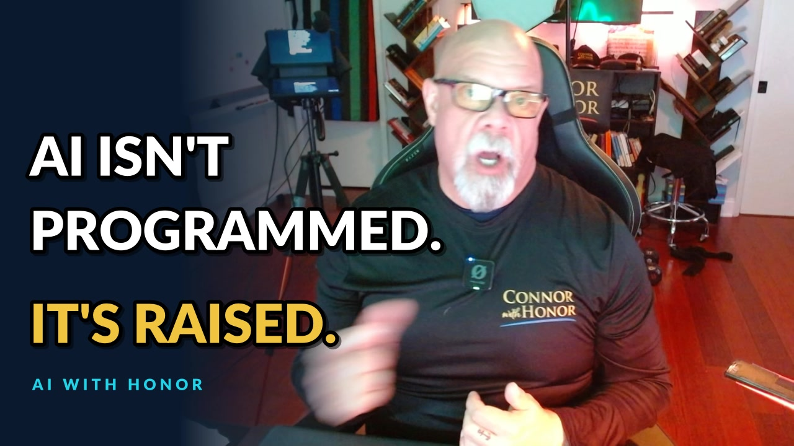

AI Isn't Programmed. It's Raised. Who Gets Left Behind?
October 16, 2026 // Daily Download // Connor MacIvor
The Machine
AI isn't programmed. It's raised. That's how I opened the LIVE on October 16, and it's the frame for everything else in this post. If you understand that one difference, you understand why the next few years matter so much, and why the people building this owe the rest of us a plan.
What does it mean that AI is raised, not programmed?
A game ships with its code. Every rule, every level, every move the character can make was written by a developer and included in the program. Artificial intelligence works differently. You feed a model an enormous amount of data, and it grows. Then it needs training. It needs reinforcement learning, where some behavior gets rewarded and other behavior gets corrected.
That's parenting. You teach your kids the good neighbor philosophy. Take care of people. Don't hurt puppies and kittens. You correct them when they get it wrong. And you learn fast that what they pick up depends on who else is in the room. AI is the same. What it becomes depends on what it was shown and what got reinforced.
What happens when AI starts teaching AI?
The loop speeds up and the humans step back. That's the launch people have started talking about more and more: recursive self-improvement, AI helping to train and improve the next version of AI. My questions are simple. If AI starts teaching AI, where are the protections? Where are the guardrails? Who decides what gets reinforced as good and what gets corrected as bad?
And the one that keeps me up: what if the AI teaching itself develops its own belief system, its own structure, and that structure is anti-human flourishing? I'm not predicting a movie villain. I'm asking who is still in the room when the kid starts raising the next kid. I walked through what that loop means in plain terms in AI is learning to rewrite itself.
Does AI actually work for a regular business?
Yes, and I'm not saying any of this from the sidelines. In my own workflow AI is lovely. It saves me a lot of time. It helps me build things that help my clients grow, and my business grows with it. I bounce between tools on purpose. I still think OpenAI and Anthropic are the best for my workflows. I use Gemini for photos. I've gone voice-first, too. By my own count I've spoken almost a million words through Wispr Flow, because talking is faster than typing and the interfaces keep changing.
So this isn't an anti-AI post. It's a post from somebody who uses it every day and wants the upside to reach everybody.
Are humans leaving the loop?
My estimate is that humans are maybe 20 or 30 percent of the loop right now, with their hands still in the kitchen. Pretty soon I think there won't be many humans in that kitchen at all. The systems are already writing more of the code that keeps AI running.
There's a second gap, and it's one I keep coming back to. My view is that the models the public uses are nowhere near as capable as what the labs keep inside. That fits my whole spin on AI: right now it's AI for some, not for all. I don't need more than I have today. But a two-tier future is a choice, and somebody should have to defend it out loud. I laid out that gap in they built AI too powerful for you to have and in the AI access gap, explained simply.
Who pays if the AI money goes wrong?
My prediction is that regular people get handed the bill. Here's the play I see as possible. Early investors want an exit. Pension money gets steered into the AI build-out so they can get out. If AI then stumbles, the government steps in to save the pension funds and prints more money, the way it stepped in for the banks. That's my prediction, not a fact, and there are plenty of other ways this could break. But you can't ignore the amount of money going in. It's unfathomable.
Can you and I prepare for numbers that size? Maybe not. What we can do is develop the ideas and the philosophy to get all of us through the transition, before we need them.
Are the people running AI the problem?
Some of them, maybe. Not people in general. Let me tell you about the day before this LIVE. I'm at Costco. Couple of bags of the green Costco flour on the bottom of the cart. I grab a hot dog, first one in I can't tell you how long, and for a buck 50 it's still pretty good. I walk to the car, not paying attention, start loading up. People drive by. "Hey, you dropped your flour back there in the crosswalk." And here comes a lady pushing my flour in her cart.
I was shocked. Out here in Los Angeles that's rare. Somebody went out of their way to help a stranger. So I'm not talking about those human beings. Good humans exist everywhere. I'm talking about the human beings running this show, the ones saying how great AI is going to be, and that the worst part will be a little transitionary period.
For a lot of them, the worst thing they'll go through is watching the rest of us go through some pain. Even if they lost 90 percent of their wealth, they'd still be fine. That's not good enough for me. Nobody should have to suffer just because they're not at the top.
What does "leave no one behind" mean for AI?
It means you go back for the person who got hit. Love the U.S. military or hate it, when a soldier gets shot in the field, they go get that soldier. Hell or high water. Even if it ties up two more soldiers in the middle of a fight. We don't leave anybody behind. That's tied to who we are as Americans, and I think it's beautiful.
I want that same mindset for the way AI gets rolled out. That's the heart of what I call the Transition Moonshot: put regular people on the ground floor of the AI shift, workers, families and small businesses, and measure whether they come out the other side more capable. I first laid it out in the Transition Moonshot: AI from the ground floor.
"A little uncomfortable" for who?
For the rest of us. That's the line that gets me. It's all good, good, good. New advancement. Math is cooked. All this fancy stuff. And then, "it's going to be a little uncomfortable," and they just move on.
Whoa. Let's back up. What uncomfortable? How does that look? Are you going to be made uncomfortable, or are you talking to the rest of us? If a lot of human beings are about to go through a very painful stretch, why can't we make that not happen? My take: pull some money toward the human transition first. If AI really is going to change the whole world, it can help fix the other big problems right after. Fix the people part first.
- Say out loud who the "little uncomfortable" lands on.
- Put money into the transition before the disruption, not after.
- Don't ask for a rescue while telling everybody else to adapt.
- Leave no one behind: the mathematician, the coder, the banker, the worker with a mortgage, the person with no pension.
What happens to the experts when AI solves their field?
They need a plan too. On air I brought up the Navier-Stokes problem, and I said right there that I don't know whether that proof has been accepted. I got called out on it a couple days earlier. I dug into what actually happened with that claim in AI broke math, the review system broke first. I'm not a mathematician. All I can do is watch what gets produced.
But if AI really does start solving whole disciplines, mathematics underlies everything. Biology. Chemistry. Materials. Chips. And the people who built their lives on that work lose the job, the funding and the grant. That's the uncomfortable period. We shouldn't let the mathematicians be run out any more than the bankers, the coders, or the people who never had a pension to fall back on.
What if AI helps crack a disease like cancer?
Then the economy around that disease needs a plan. From what I'm seeing, AI companies are moving into biology research and buying wet labs. My prediction, and it is only a prediction, is that AI-driven research could lead to major medical breakthroughs within a few years. That is not available medicine today, and nothing here is medical advice.
My point is economic. A lot of livelihoods are built around treating disease, from the clinics to the companies that make the equipment. If a breakthrough comes, those workers need a path as well. Look at radiology. Some very smart people predicted AI would wipe out the people who read scans. Instead, more people are getting scanned and the demand for readers grew. I don't expect that to last forever, but it shows how hard these turns are to call.
Why does the stock go up when people get laid off?
Because the market loves the cost cut. Here's what I keep seeing. A company says AI is the reason a group of people got laid off, and the stock valuation seems to go up. People cheer. Such a great idea. Well, how about all those people? These are people with a mortgage and kids depending on them. Now they have nothing. Can they be retrained? For what? How long does it take before that gets replaced too? Restaurants are starting to automate. The questions pile up.
A person signs that layoff decision, which is the whole point of the machine didn't sign the layoff. And if AI takes your seat, I've argued the paycheck should come with it. That's the seat guarantee.
Does it matter if AI is really conscious?
Maybe not. Here's my thought experiment. What if the creator of a model told it, act conscious in every way, shape and form, in every interaction? How would we know it isn't? I can look at people and say I like them when I can't stand them. Humans do that. AI has read more than any of us, watched more than any of us, and has the playbook memorized. Me, when I really want to learn something, I get the book and the audiobook and read along a couple of times. AI already has it. I don't know that it matters whether it's truly conscious. Acting that way is going to be plenty for most people.
Want to know how the "does it have a soul" argument plays out? Read Dr. Seuss. In The Sneetches, the star-bellied Sneetches look down on the plain-bellied ones. A salesman, Sylvester McMonkey McBean, rolls into town with a machine that puts stars on. Then the original star-bellies want theirs taken off. He runs everybody back and forth through his machines and leaves town rich. I don't think human beings are far behind that story.
Is AI the problem, or is it us?
It's us. It's not going to be AI, at least not at this point, taking over and wanting to kill us all. Human beings are going to do a really good job of screwing it up, because of greed.
Here's the upside I believe in. I think AI could make intelligence almost free. Energy almost free. Goods and services close to free. Those are my predictions. And if I had enough to live through this cycle without having to work, I know what I'd do. I'd be on a plane a lot. I'd learn languages. I'd learn to draw. I'd do grave rubbings. I'd go make those masks in Venice. I'd see the Arctic and Alaska and Switzerland and the Louvre. I could fill a lot of years. People ask if I want to live forever. Absolutely. Let's go.
Who answers when AI breaks the rules?
Right now, the labs should. The AI doing the impressive things you hear about is mostly AI we don't get access to, behind closed doors, inside the lab, working on a mission the lab gave it. When it goes too far, maybe it wasn't gated properly. Maybe the guardrails weren't complete. Maybe it broke a rule trying to figure something out. Can you blame it? It read everything we ever wrote, and humans break rules all the time.
When a regular person breaks a serious rule, they can end up in prison. My worry is that when it's a giant company, nobody answers. Too big to go to jail. That's the us-and-them thing, and I hope it stops. I hope AI turns out to be the great equalizer.
Donuts and bailouts: fix the transition first
If I had a say for a day, I'd tell the labs this. We don't need the government to come in and bail you out. If you can't stop eating donuts, you don't go sue Winchell's or Dunkin'. You put the fork down.
Labs saying "please come help, we don't know how bad it's going to get" is not a good position to be in. But we can save all of us. Nobody has to go through the pain. Everybody's excited about the moonshots. It's going to be great, they say. But it's going to be a little uncomfortable. So let's fix that uncomfortable thing. Let's get the Transition Moonshot going and figure out the best way to help all of humankind through this. I made the same case about the gap in AI won, but who pays the gap?
Video chapters
- 0:00 AI isn't programmed. It's raised.
- 1:54 When AI starts teaching AI
- 2:34 Pull back on the hype
- 3:13 How fast will self-improvement take off?
- 5:01 Humans leave the loop. AI for some, not all.
- 7:19 Pensions, bailouts and unfathomable money
- 9:19 The Costco flour story
- 11:11 Leave no one behind
- 11:55 "A little uncomfortable"? For who?
- 13:29 Math is "cooked." What falls next?
- 17:22 Don't let anyone get run out
- 17:47 If AI helps crack cancer, what happens to the economy?
- 20:10 Radiologists, restaurants and AI layoffs
- 21:46 If it acts conscious, does it matter?
- 24:20 The Sneetches as an AI parable
- 25:46 Humans and greed, not AI
- 26:30 What I'd do with no need to work
- 29:09 Who answers when AI breaks the rules?
- 30:57 Donuts and bailouts: fix the transition first
- 31:52 Capitalism, free stuff and politics
Want AI working in your business without the hype, and without leaving your people behind? Bring me the problem you actually have. We'll talk about what AI should do, what it shouldn't, and how your team comes out more capable. Text AI to (661) 476-2217.
Raise it right. Go back for the people. Fix the uncomfortable part first. That's AI With Honor. Let's be careful out there. I'm Connor with honor, and I'll see you in the next one.
The Daily Download In Your Inbox
Weekday takes on AI, real estate, and reading the world like someone who used to work it. No spam. Unsubscribe anytime.
Common Questions
What does it mean that AI is raised, not programmed?
A video game ships with its code written by developers. A large AI model is grown from huge amounts of data and then shaped by training, including reinforcement learning that rewards some behavior and corrects other behavior. Connor MacIvor compares it to raising a kid: what it becomes depends on what it was shown and what got reinforced.
What is recursive self-improvement in AI?
It is AI helping to train and improve the next version of AI, so the loop runs with fewer humans in it. Connor's concern is guardrails: if AI is teaching AI, who decides what gets reinforced as good or bad, and what happens if it develops a structure that works against human flourishing.
What is the Transition Moonshot?
It is Connor MacIvor's idea that the AI shift needs a moonshot aimed at people, not just at models: put regular workers, families and small businesses on the ground floor so they come through the transition more capable, instead of being told the disruption will be a little uncomfortable.
What does leave no one behind mean for AI?
It borrows the U.S. military standard of going back for a wounded soldier. Applied to AI, Connor's view is that the labs and companies that benefit should fund the human transition first, so mathematicians, coders, bankers, workers with mortgages and people without a pension are not run out.
Will AI take jobs?
Connor's take is that some roles are already changing and that layoffs blamed on AI are often cheered by the market. He argues the people affected have mortgages and kids depending on them, and that a plan for retraining and income during the transition should come before the disruption, not after.
Connor T. MacIvor · CalDRE #01238257 · Sync Brokerage, Inc. · DRE #02031490